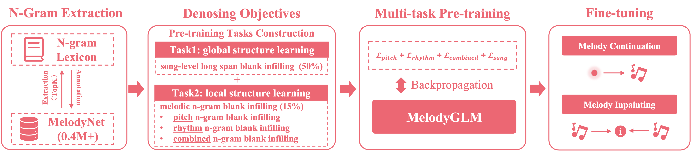
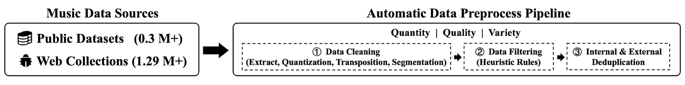

MelodyGLM: Multi-task Pre-training for Symbolic Melody Generation
Abstract
Pre-trained language models have achieved impressive results in various music understanding and generation tasks. However, existing pre-training methods for symbolic melody generation struggle to capture multi-scale, multi-dimensional structural information in note sequences, due to the domain knowledge discrepancy between text and music. Moreover, the lack of available large-scale symbolic melody datasets limits the pre-training improvement. In this paper, we propose MelodyGLM, a multi-task pre-training framework for generating melodies with long-term structure. We design the melodic n-gram and long span sampling strategies to create local and global blank infilling tasks for modeling the local and global structures in melodies. Specifically, we incorporate pitch n-grams, rhythm n-grams, and their combined n-grams into the melodic n-gram blank infilling tasks for modeling the multi-dimensional structures in melodies. To this end, we have constructed a large-scale symbolic melody dataset, MelodyNet, containing more than 0.4 million melody pieces. MelodyNet is utilized for large-scale pre-training and domain-specific n-gram lexicon construction. Both subjective and objective evaluations demonstrate that MelodyGLM surpasses the standard and previous pre-training methods. In particular, subjective evaluations show that, on the melody continuation task, MelodyGLM gains average improvements by 0.82, 0.87, 0.78, and 0.94 in consistency, rhythmicity, structure, and overall quality, respectively. Notably, MelodyGLM nearly matches the quality of human-composed melodies on the melody inpainting task.

MelodyNet (Continuous Updating)

| Public Corpus | Website | Download |
| NES |
https://www.kaggle.com/datasets/imsparsh/nes-mdb-dataset
https://github.com/chrisdonahue/nesmdb |
|
| POP909 | https://github.com/music-x-lab/POP909-Dataset | |
| MTCL | https://www.liederenbank.nl/mtc | |
| Wikifonia |
http://www.wikifonia.org
http://www.synthzone.com/files/Wikifonia/Wikifonia.zip |
|
| Session | https://thesession.org | |
| LMD | https://colinraffel.com/projects/lmd | |
| SymphonyNet | https://symphonynet.github.io | |
| MetaMIDI | https://zenodo.org/record/5142664 |
| Web Collections | Website | Download |
| MuseScore |
https://musescore.org
https://github.com/Xmader/musescore-dataset |
|
| Hooktheory |
https://www.hooktheory.com
https://github.com/wayne391/lead-sheet-dataset |
|
| BitMidi | https://bitmidi.com | |
| FreeMidi |
https://freemidi.org
https://github.com/josephding23/Free-Midi-Library |
|
| KernScores | http://kern.ccarh.org | |
| Kunstderfuge | https://www.kunstderfuge.com | |
| ABC Notation | https://abcnotation.com |
MelodyGLM Samples
| Melody Continuation | Melody Inpainting | ||
| midi | midi | ||
| midi | midi | ||
| midi | midi |
Baseline Models
| Scratch | midi | midi | midi | ||||
| SLM | midi | midi | midi | ||||
| Span | midi | midi | midi | ||||
| Bar | midi | midi | midi | ||||
| Long | midi | midi | midi | ||||
| Musical N-gram | midi | midi | midi |
| Scratch | midi | midi | midi | ||||
| SLM | midi | midi | midi | ||||
| Span | midi | midi | midi | ||||
| Bar | midi | midi | midi | ||||
| Long | midi | midi | midi | ||||
| Musical N-gram | midi | midi | midi |